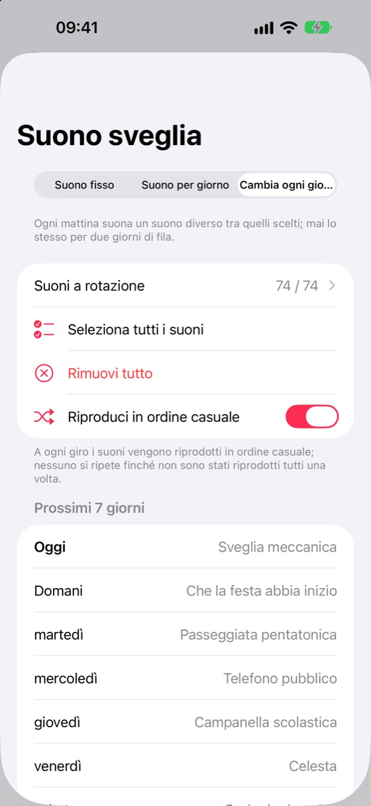
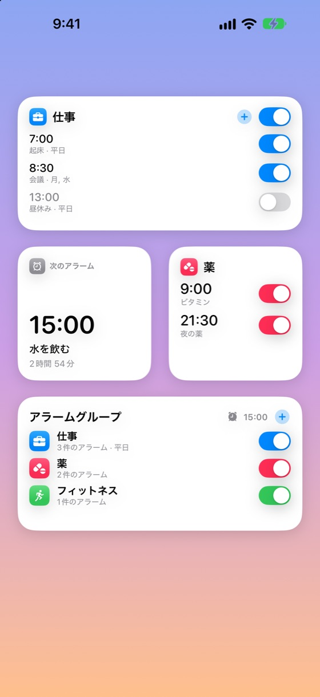
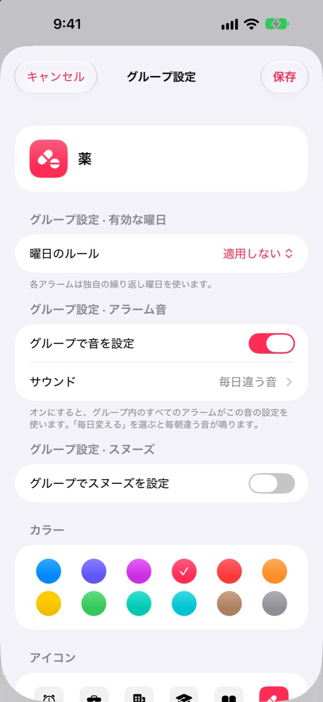
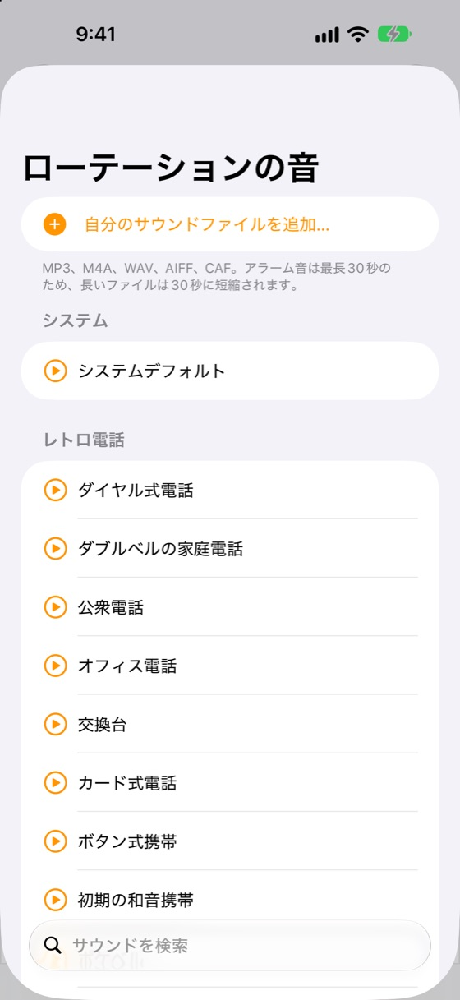
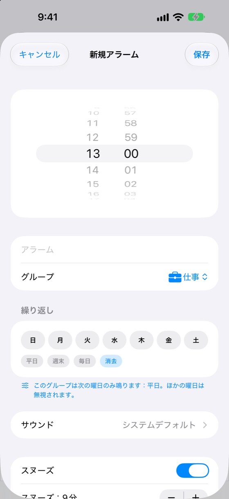
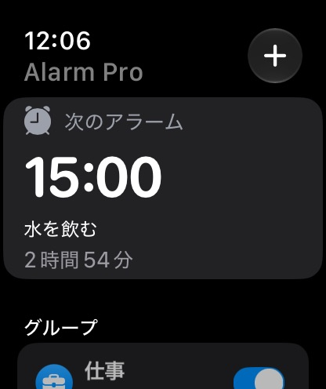
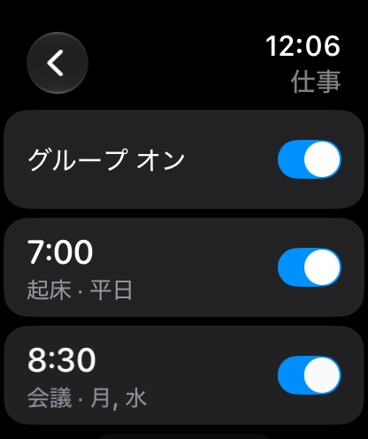

時計Appにないものがすべてそろう
Alarm ProはiPhone内蔵のアラームシステムを使用。消音モードや集中モード中でも全画面で鳴ります。
毎朝、新しいサウンド
時計アプリにはない機能。アラームが毎日自動で違うサウンドで鳴ります。74種類すべてをワンタップで追加し、シャッフル再生、今後7日間の予定も確認できます。2日続けて同じ音は鳴らないので、音に慣れて聞き流すことがありません。
折りたためるグループ
グループはきれいに並び、タップで展開。グループにもアラームにも個別のスイッチがあります。
グループの曜日ルール
平日グループは週末に鳴りません。曜日はグループで一度設定すれば全アラームに適用されます。
74種類のオリジナル音＋自分の音
レトロな電話のベルからやさしい目覚めまで、すべてAlarm Pro専用。自分のオーディオファイルも追加できます。
ウィジェットとコントロールセンター
ホーム画面からグループやアラームをオン/オフ。ウィジェットをタップしてアラームの追加・編集も。
Apple Watch
次のアラームを確認し、グループやアラームを切り替え、手首から追加・編集。コンプリケーション付き。
時計から読み込み
ショートカットでiPhoneの既存アラームを一括で読み込み。重複はスキップされます。
スヌーズとロック画面
スヌーズはアラームごと・グループごとに設定可能。カウントダウンはロック画面とDynamic Islandに表示されます。
17言語、ライト＆ダーク
アプリの設定で17の言語から選べます。ライト/ダークの外観にも自動で合わせます。
Premium：広告なし・グループ無制限
Alarm Proは2グループまで無料。PremiumならiPhoneとMacで広告が消え、グループを無制限に作成できます。月額、または2か月分お得な年額プランから選べます。
寄付で応援
アプリが気に入ったら、お好きな金額で1回限りの寄付ができます。
詳しく見る
すべての画面がデバイスの言語と外観に合わせて表示されます。





手首でそのまま
Apple WatchアプリはiPhoneと同期。グループの切り替え、アラームの編集、次に鳴るアラームの確認ができます。


サウンドのカテゴリ
すべての音はAlarm Proのために作られました。